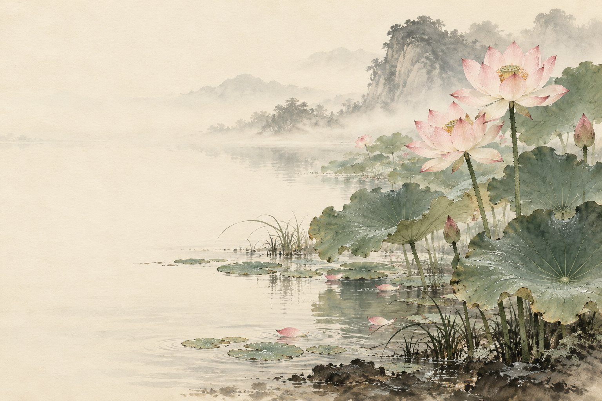
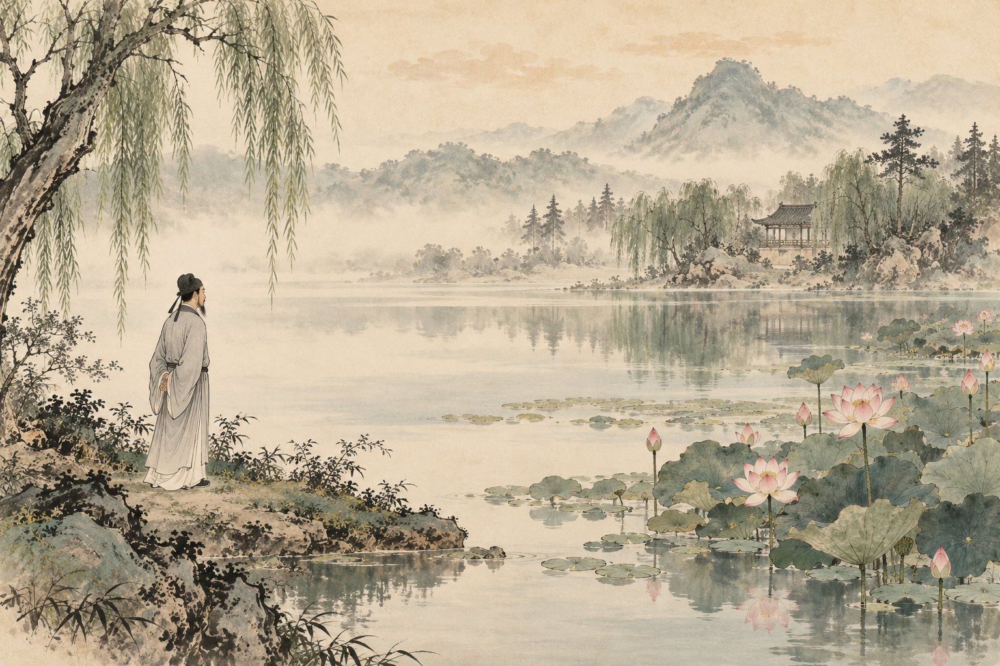

原文点有细线的字词，读音释义即现

慢读先看一幅画，再读一段文。
先看莲怎样生长，再想作者为何独爱它。
画卷目录从任意一幕，走进故事
给一起读书的大人
全文分四幕，可一次通读，也可只围绕一种花的形态慢读。从孩子看得见、说得出的细节起步，再去理解借花喻人；保留孩子自己的审美与选择。
白话、赏读和深入讨论按需展开。留给孩子自己的感受，不预设标准读后感。插画是依据文章展开的艺术想象；人物、衣饰、建筑与细节并非历史实景复原。
查看原文版本与资料说明 →停一停 · 你来发现
水墨插画为艺术想象 · 可用键盘 ← → 翻页
把四幕，连成一篇
爱莲说
〔北宋〕周敦颐
文止于此，回味未止。
把字词，放回句子里
字词小笺
认一个字，也看它在这一句里做什么。
把意思，放回这一句话
植
这里指竖立。
不要直接套用今天“种植”的意思。
独与众
谁独爱？谁爱得多？
比较选择，也留意语气。
花之君子
先写花的样子。
再用人的品格理解这个比喻。

合上书，还能带走什么
你想守住哪一种自己
看见花的姿态，
也想想自己的选择。
留下一句，属于自己的体会。
选一个真正触动你的细节，写下欣赏、疑惑或不同的想法。
只保存在当前浏览器中。
想聊得更深一点：喜欢一种花，就能判断一个人吗？
作者用三种花表达三种志趣。请区分“文章借花表达什么”与“现实里一个人为什么喜欢这种花”，说说比喻能帮助理解什么，又不能据此断定什么。
聊过之后，再读一种理解
莲、菊与牡丹在本文中承担了不同的象征意义，帮助作者表达自守、隐逸与富贵之间的选择。读懂这种写法，并不意味着现实里每位赏花者都符合文章赋予花的性格；判断一个人的品格，还要看他的行动。
走近写下文字的人：周敦颐
周敦颐是北宋思想家、文学家。《爱莲说》以花喻人，表达作者所向往的人格。“说”是古代的一种文体，可以借一物一事说明道理、表达见解。本册不把未经核实的具体写作地点或轶事作为阅读前提。
原文与资料 →纸上
再读第一幕 →给一种植物画一张品格小笺。
选一种你熟悉的植物，先画出或记录一个真实特点，再写它让你联想到怎样的人。把“观察到的”与“联想到的”分开，看看你的比喻是否说得通。
卷末 · 资料与制作
每一篇，都有文字的来处。
原文与版本
采用常见课文全文“世人甚爱牡丹”，分四幕；全文页保留两个自然段。维基文库所录作“世人盛爱牡丹”，意思相近，本册采用“甚”并在此注明版本差异。简体字与标点按现代阅读习惯整理。
校核来源：维基文库：《爱莲说》公版全文；高校公开古诗文汇编：《爱莲说》。查阅日期：2026 年 10 月 29 日。古文为公版作品；白话、释义、赏读与共读提示为本册重新组织。
读音与理解
“蕃”读 fán，“濯”读 zhuó，“亵”读 xiè，“鲜有闻”的“鲜”读 xiǎn。“净植”的植是竖立。莲的形态被赋予人的品格，是文学表达；菊、牡丹、莲并置的画面也不代表它们的真实花期相同。
四幅水墨画
插画使用内置 image_gen 工具生成。原图与完整提示词保存在本册制作文件中。水墨画帮助读者想象文章，人物、场所、器物是艺术表现，不是历史照片、科学图鉴或精确实验记录。
离线与书架
单文件 HTML 内含本册插画、样式和交互，可以单独阅读。保留原目录结构时可返回书架或切换篇目。来源链接需要网络。
孩子主动填写的话按篇尝试保存在当前浏览器。移动文件、更换浏览器、设备或隐私模式可能影响保存，请导出重要记录；记录不上传，也不会被打入阅读压缩包。书架不代表孩子已经学习或掌握。
回到封面 →